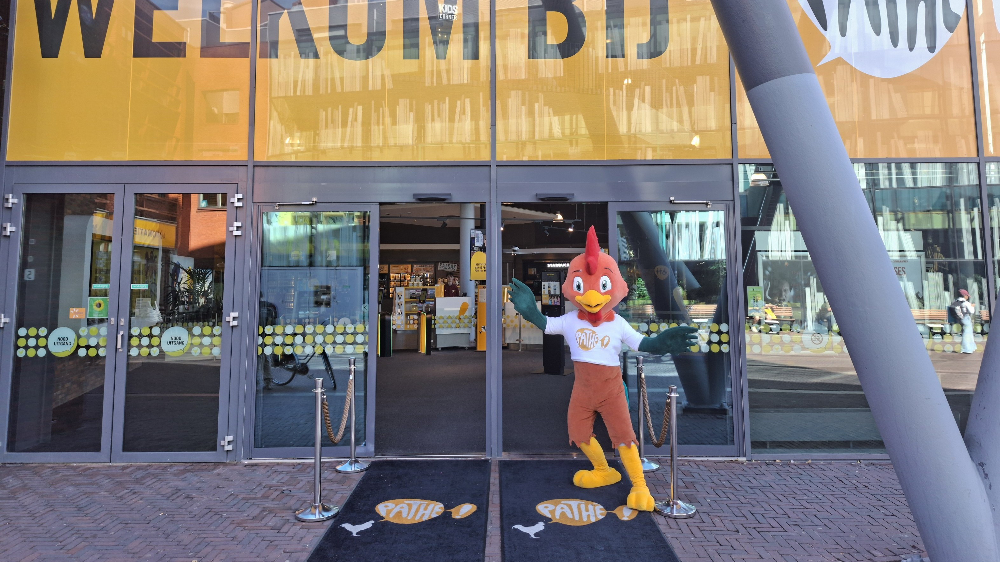
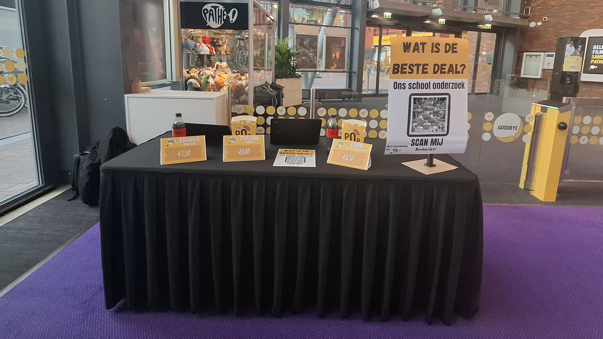

Wat was dit project?
Het profielwerkstuk was een groter onderzoekproject waarin ik mezelf verdiepte in marketing en klantanalyse. Het was een interessante combinatie van onderzoek doen, analyseren en presenteren.
PWS · Onderzoek
Mijn profielwerkstuk ging over marketingonderzoek bij de Pathé in Delft. Ik heb onderzoek gedaan naar klantgedrag, marketingstrategieën en hoe dit zich vertaalt naar praktijkervaring.

Het profielwerkstuk was een groter onderzoekproject waarin ik mezelf verdiepte in marketing en klantanalyse. Het was een interessante combinatie van onderzoek doen, analyseren en presenteren.
Ik heb het onderzoek opgebouwd vanaf de start en de resultaten samengevat in een duidelijke presentatie. Het project gaf mij veel ervaring met onafhankelijk werken en het presenteren van complexe informatie.

